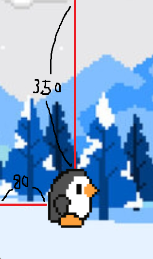
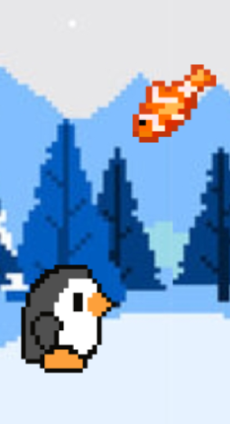
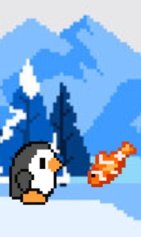

두 번째 제작기에서는 코드의 가독성을 높이기 위해 진행했던 구조 개선과 함께 추가로 더한 기능들, 그리고 느낀점에 대해 포스팅 했다.
1. 한계에 대한 고민
기본적인 틀은 잡았지만 앞으로의 추가적인 구현을 위해 구조 개선을 하기로 했다. 구조 개선을 하기로 한 이유는 아래와 같다.
-
이미지의 로드, 점프 기능, 여러가지 이벤트가 모두 main 함수 내부에서 진행되기 때문에 코드가 지저분해짐.
-
바다사자, 갈매기 뿐만 아니라 새로운 객체들이 추가되면 그에 관련된 코드들이 추가되면서 코드의 가독성이 더 떨어질 것임.
-
구조 개선을 통해 클래스를 구현해 놓으면 앞으로 몇 개의 객체를 새로 추가 하더라도 코드를 작성하는 데에 어려움이 없을 것임.
2. 구조 개선하기
우선 우리가 만들고 있는 게임의 모티브인 크롬 공룡 달리기 게임을 구현한 새로운 코드를 가지고 와서 원래 진행하고 있던 현황까지로 변경하기로 했다.(출처코드) 해당 코드에 대한 강의가 유튜브에 있었기 때문에 전체적인 코드 진행을 알기 위해 강의를 보고난 후 진행했다. 우선 스크린에 관련된 설정과 게임에 필요한 이미지를 모두 전역변수로 초기화 했다.
SCREEN = pygame.display.set_mode((SCREEN_WIDTH, SCREEN_HEIGHT))
RUNNING = [pygame.image.load("./img/peng_run_1.png"),
pygame.image.load("./img/peng_run_2.png")]
JUMPING = pygame.image.load("./img/peng_jump.png")
DUCKING = pygame.image.load("./img/peng_duck.png")
SEAL = pygame.image.load("./img/seal.png")
SEAGULL = [pygame.image.load("./img/seagull_up.png"),
pygame.image.load("./img/seagull_down.png")]
FISH = pygame.image.load("./img/fish.png")
BG = pygame.image.load("./img/main_background.png")
그 다음으로 게임에 필요한 객체들을 생성하기 위해 기존에 있던 클래스들 중 필요한 클래스만 살리고 나머지는 지웠다. 펭귄 클래스의 내용부터 살펴보면
X_POS = 80 # x좌표
Y_POS = 350 # y 좌표
Y_POS_DUCK = 370 # 펭귄이 숙이기 동작을 할 때의 y 좌표
JUMP_VEL = 8 # 점프 기능 구현에 사용할 변수
def __init__(self):
self.duck_img = DUCKING
self.run_img = RUNNING
self.jump_img = JUMPING
self.peng_duck = False
self.peng_run = True # 게임 시작시 달리면서 시작하기 때문에 True
self.peng_jump = False
self.step_index = 0 # 다른 함수에서 이미지 변경을 위해 사용 할 변수
self.jump_vel = self.JUMP_VEL # 점프기능 구현을 위한
self.image = self.run_img[0] # 달리는 이미지 2개 중 첫 번째 이미지로 시작
self.peng_rect = self.image.get_rect() # 충돌 범위를 구하기 위한 모양
self.peng_rect.x = self.X_POS
self.peng_rect.y = self.Y_POS
def update(self, userInput): # 입력 이벤트가 들어올 시 실행
if self.peng_duck:
self.duck()
if self.peng_run:
self.run()
if self.peng_jump:
self.jump()
if self.step_index >= 10: # step_index가 10보다 커지면 다시 0으로 초기화
self.step_index = 0
if userInput[pygame.K_UP] and not self.peng_jump: # K_UP 입력이 들어오고 점프 상태가 아닌경우 -> jump() 메소드를 실행
self.peng_duck = False
self.peng_run = False
self.peng_jump = True
elif userInput[pygame.K_DOWN] and not self.peng_jump: # K_DOWN 입력이 들어오고 점프 상태가 아닌 경우 -> duck() 메소드를 실행
self.peng_duck = True
self.peng_run = False
self.peng_jump = False
elif not (self.peng_jump or userInput[pygame.K_DOWN]): # 점프 상태도 아니고 K_DOWN 입력도 들어오지 않은 경우 -> run() 메소드를 실행
self.peng_duck = False
self.peng_run = True
self.peng_jump = False
상태변경의 마지막 조건 elif not (self.peng_jump or userInput[pygame.K_DOWN])에서 K_UP입력이 들어왔을 때도 이 조건에 포함이 되지 않나 생각 할 수도 있지만 기본적으로 코드의 진행은 위에서 아래로 진행되기 때문에 첫 번째 조건에 포함되어 따로 고려하지 않아도 된다.
def run(self):
'''step_index >= 10 이면 step_index = 0이므로 달리는 이미지의 인덱스가
0, 0, 0, 0, 0, 1, 1, 1, 1, 1로 계속 반복하게 됨.'''
self.image = self.run_img[self.step_index // 5]
self.peng_rect = self.image.get_rect()
self.peng_rect.x = self.X_POS
self.peng_rect.y = self.Y_POS
self.step_index += 1
def jump(self):
self.image = self.jump_img
if self.peng_jump:
''' 점프 상태일 때 y좌표의 값을 빼므로 위로 올라가게 되고 빼는 값이 점점
작아지면서 아래로 내려오게 된다.'''
self.peng_rect.y -= self.jump_vel * 4
self.jump_vel -= 0.8
if self.jump_vel < - self.JUMP_VEL:
self.peng_jump = False
self.jump_vel = self.JUMP_VEL
좌표를 빼면 왜 위로 올라가게 되는지 생각해보면 처음 설정한 X_POS와 Y_POS가 적용된 것을 보면 알 수 있다.

이렇게 계산되기 때문에 y좌표를 빼면 그만큼 위로 올라가게 된다.
3. 기능 추가하기
점프 기능, 장애물과 닿았을 때 종료되는 기능 말고도 추가로 점수 기능이 필요했다. 우선 장애물 클래스인 Obstacle을 만든다. 모든 장애물은 이 Obstacle을 상속받는다. 추가로 구현한 물고기 클래스도 장애물 취급하며 Obstacle을 상속받는다.
class Obstacle:
def __init__(self, image):
self.image = image
self.rect = self.image.get_rect()
self.rect.x = SCREEN_WIDTH
def update(self):
self.rect.x -= game_speed # game_speed만큼씩 x좌표를 빼며 다가옴
if self.rect.x < -self.rect.width:
obstacles.pop() # obstacles는 장애물 객체를 담을 리스트
def draw(self, SCREEN):
SCREEN.blit(self.image, self.rect)
class Seal(Obstacle):
def __init__(self, image):
super().__init__(image)
# x좌표는 부모 클래스를 상속받으므로 자동으로 초기화
self.rect.y = 350
class SeaGull(Obstacle):
def __init__(self, image):
super().__init__(image)
# x좌표는 부모 클래스를 상속받으므로 자동으로 초기화
self.rect.y = 310
self.index = 0
def draw(self, SCREEN):
# 갈매기 이미지도 스왑하며 움직이도록 하기 위해 지우지 않음
if self.index >= 9:
self.index = 0
SCREEN.blit(self.image, self.rect)
self.index += 1
class Fish(Obstacle):
def __init__(self, image):
super().__init__(image)
y_pos_fish = [170, 350] # 2개의 값을 가지는 y좌표 리스트
self.rect.y = random.choice(y_pos_fish)
self.index = 0
물고기 객체는 y좌표 2개를 가지고 random.choice()로 선택된 하나의 y좌표에 의해 그려지게 된다.
 
이제 게임에 필요한 모든 클래스를 만들었으니 main 함수에서 구현하기만 하면 된다. 점수를 스크린에 렌더링 할 수 있는 score() 함수와 배경을 그리는 background() 함수를 구현하고 while문으로 넘어가 게임 코드가 진행된다.
while run:
for event in pygame.event.get():
if event.type == pygame.QUIT:
run = False
pygame.quit()
sys.exit()
userInput = pygame.key.get_pressed()
background()
player.draw(SCREEN)
player.update(userInput) # 입력이 들어올 때마다 update함수 실행
if len(obstacles) == 0: # 객체 리스트가 비었다면
# 0 ~ 30 중 랜덤하게 정수 하나를 뽑아 해당 하는 객체를 리스트에 추가
if random.randint(0, 30) <= 9:
obstacles.append(Seal(SEAL))
elif random.randint(0, 30) <= 14:
obstacles.append(SeaGull(SEAGULL))
elif random.randint(0, 30) <= 29:
obstacles.append(Fish(FISH))
for obstacle in obstacles:
obstacle.draw(SCREEN)
obstacle.update()
if player.peng_rect.colliderect(obstacle.rect): # 펭귄과 장애물이 만나는 이벤트가 발생했을 때
if(obstacle.image == FISH): # 물고기라면
obstacles.remove(obstacle) # 리스트에서 제거하고
scores += 1 # 1점 추가
COIN_SOUND.play()
else: # 나머지 장애물이라면 게임 종료
pygame.mixer.music.stop()
pygame.time.delay(1000)
death_count += 1
menu(death_count)
score() # 스코어 렌더링
clock.tick(30)
pygame.display.update()
객체를 리스트에 추가할 때 조금 더 랜덤성을 부여하기 위해 1 : 1 : 1이 아닌 10 : 5 : 15로 설정했다. 물고기 또한 장애물 클래스를 상속받지만 펭귄 이미지와 만났을 때 게임이 종료되지 않고 점수가 올라야 하므로 조건을 추가했다.
4. 느낀점
무엇보다 깃허브 공동작업 연습을 게임 제작으로 했던 것 때문에 더 열심히 흥미를 가지고 할 수 있었고, 혼자 하는 것 보다 팀원들과 같이 했기 때문에 잘 마무리 할 수 있었던 것 같다. 혼자가 아닌 만큼 개발의 진행 속도도 빠르지만 팀원들과의 소통이 가장 중요하다는 것을 느꼈다. 우리 팀원들 고생 하셨습니다!